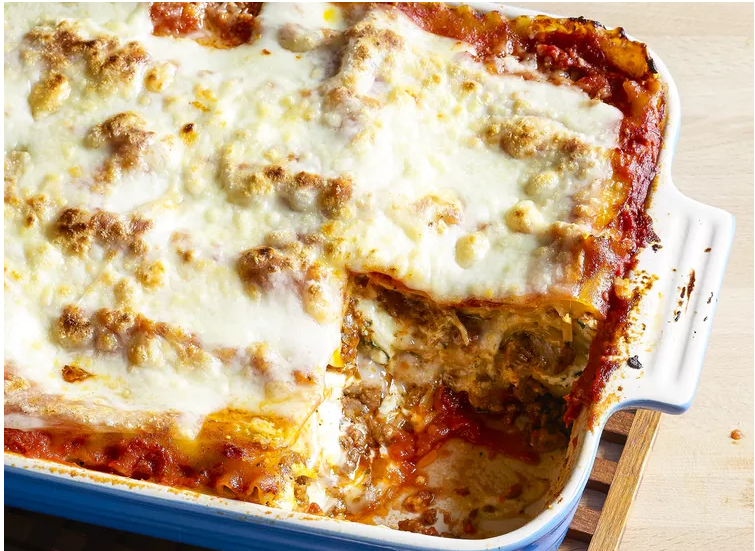

Yam Porridge recipe

Description:
This recipe is amazing I would freeze the leftover in slab meals on a cookie sheet them vacuum seal them once they are frozen. This way it will be perfect warmed up. It can stay in the freezer for up to 5 month and taste the same as I put it in.
Ingredients
- 1 pound sweet Italian sausage
- 2 cloves garlic, crushed
- 1 (28 ounce) can crushed tomatoes
- 2 (6 ounce) cans tomato paste
Steps
- Gather all your ingredients.
- Cook sausage, ground beef, onion, and garlic in a Dutch oven over medium heat until well browned.
- Stir in crushed tomatoes, tomato sauce, tomato paste, and water. Season with sugar, 2 tablespoons parsley, basil, 1 teaspoon salt, Italian seasoning, fennel seeds, and pepper. Simmer, covered, for about 1 ½ hours, stirring occasionally.
- Bring a large pot of lightly salted water to a boil. Cook lasagna noodles in boiling water for 8 to 10 minutes. Drain noodles, and rinse with cold water.
- In a mixing bowl, combine ricotta cheese with egg, remaining 2 tablespoons parsley, and 1/2 teaspoon salt.